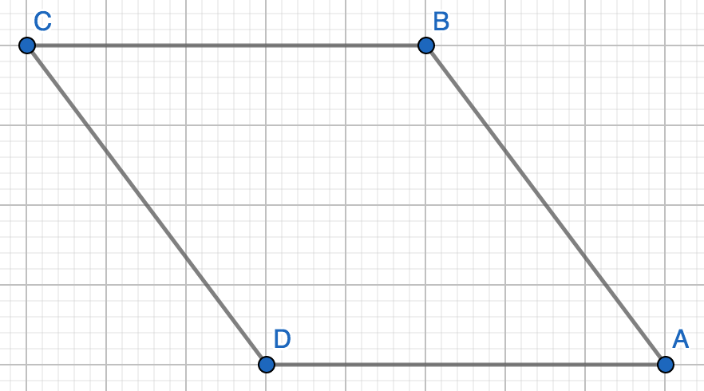
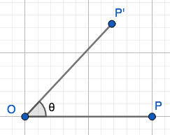
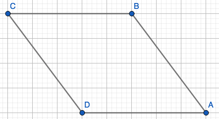
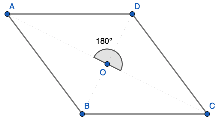
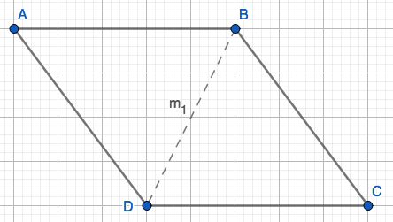
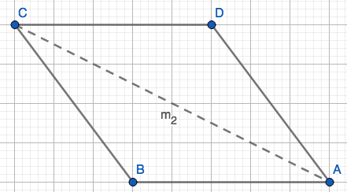

Proving that the Set of Symmetries of Non-Square Rhombus is a Group Under Composition
School
Mathematics
Proofs
This is a “presentation” style proof for Math-338: Modern College Geometry, and looks at the symmetries of a non-square rectangle.
0. Quiz 2
Prove for the following statement using course resources such as our notes and textbooks. Your proof should be your own work, so you should not use any other resources. Record a short presentation or create a slideshow explaining your proof. Make sure that you clearly state any definitions, axioms, or theorems that you are using.
Suppose R is a non-square rhombus.
List the symmetries of R. Write as a composition of translations, reflections, and rotations.
Prove that the set of symmetries of R is a group under composition.
1. Definitions
1.1 Parallelogram
Both pairs of opposite sides are parallel.
\(AB\parallel DC\)
\(CB\parallel DA\)
1.2 Rhombus
Parallelogram whose sides are all the same length.
Notation: R
- \(\overline{AB}=\overline{BC}=\overline{CD}=\overline{DA}\)
1.3 Isometry
Preserves distance, length, and angle measure through “rigid motion” of rotations, reflections, translations, and compositions.
1.3.1 Translations
Move all the points across a vector \(\vec{v}\).
Notation: \(\tau_{\text{start point,end point}}\)

1.3.2 Rotations
Pick a center O (origin), \(\theta\) (angle), takes P to P’ on a circle on a circle with center O and radius \(\overline{OP}\) with \(\angle POP'=\theta\).
Notation: \(R_{O,\theta}\)

1.3.3 Reflections
Mirror of a shape across a line.
Pick line b, shown in red in Fig. 5.
Points on B don’t move.
Points not on b, such as P, go to P’ where b is perpendicular to bisector of \(\overline{PP'}\).
Midpoint m of PP’ on b make right angle \(\overline{PP'}\)
Notation: \(r_{b}\)

1.3.4 Compositions
Combinations of rotations, reflections, and translations.
1.4 Symmetry
An isometry that sends a geometric figure to itself.

1.5 Group
1.5.0 Closure
Order doesn’t matter.
\(ab=ba\)
1.5.1 Associativity
Parentheses don’t matter.
\((ab)c=a(bc)\)
1.5.2 Identity
Anything combined with identity equals itself.
\(ea=ae=a\)
1.5.3 Inverses
Undoes isometry.
\(f^{-1}(f(a))=a\)
2. Symmetries of R

2.1 4 Symmetries of R
(Using Boyce’s Notation)
2.1.1 \(e\)

2.1.2 \(R_{O,180^\circ}\)

2.1.3 \(r_{m_1}\)

2.1.4 \(r_{m_2}\)

2.1.5 Verify
To verify this we can imagine that one point only has two places to choose from, then the a different point only has two places to choose from, and then the remaining two points only have one place to choose i.e. \(2\cdot 2\cdot 1\cdot 1=4\). Therefore there are only four possible symmetries of R.
3. Group Under Composition

Define the set of symmetries of a rhombus as \(\mathscr{S}=\{e, R_{\text{ }O,\text{ }180^\circ}, r_{m_1}, r_{m_1}\}.\)
3.1 Claim: \(\mathscr{S}\) is a group under composition.
3.1.0 Closure
We want to show that composing two symmetries equals a symmetry.
Let \(\square 1234\) be a non-square rhombus, and suppose F and G are in \(\mathscr{S}\).
\[F\circ G(\square 1234)=F(G(\square 1234))=F(\square 1234)=\square 1234\]
For example:
Let \(F=r_{m_1}\) and \(G=r_{m_2}\). Then \(F\circ G(\square 1234)=R_{O,180^\circ}\).
3.1.1 Associative
\(F\circ(G\circ H)=(F\circ G)\circ H\)
\[\begin{equation}\label{D14,1} \begin{split} F\circ(G\circ H) &= F\circ (G\circ H)(\square 1234)\\ &= F(G\circ H (\square 1234))\\ &= F(G(H(\square 1234)))\\ &= (F\circ G)\circ H(\square 1234) \end{split} \end{equation}\]
3.1.2 Identity
e is one of the symmetries.
Example: \(R_{O,180^\circ}\circ e=R_{O,180^\circ}\)
3.1.3 Inverses
Every symmetry of a rhombus undoes itself.
\(e\circ e=e\)
\(R_{O,180^\circ}\circ R_{O,180^\circ}=e\)
\(r_{m_1}\circ r_{m_1}=e\)
\(r_{m_2}\circ r_{m_2}=e\)